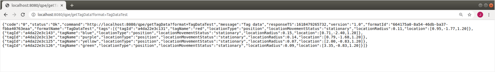
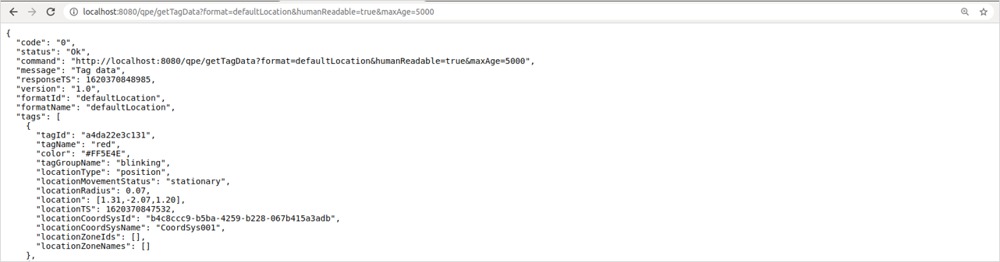

Retrieve Data from the QPE
The Quuppa APIs can be used to retrieve data from the QPE server, e.g. to monitor tag locations and data from tag sensors. Quuppa provides a variety of standard API methods for retrieving data from the QPEs, that can also be customised to your needs.
This section will walk you through making API requests using the Positioning Engine Web Console, to give you an idea of the type of data and data formats available for building your own custom applications using the QPE data.
For more detailed information about all of the available API methods, please refer to our API documentation, available via the QPE Web Console or the Quuppa Customer Portal's Downloads section.
localhost:8080/qpe/getTagData?&humanReadable=true.Make an API Pull Request Using Standard Quuppa Methods
- Select the API method that provides the information that you want to
retrieve, e.g. Get Tag data.
/qpe/getTagData?[mode=json][&format=<formatNameOrID>][&tag=<tagNameOrID>][&locator=<locatorNameOrID>][&group=<groupID>][&maxAge=<msec>][&maxLocationAge=<msec>][&humanReadable=true][&locationMovementStatus=statusTypeString][&coordSys=<coordSysID>][&zone=<zoneID>][&ignoreUnknownTags=true][&rssi=<rssiValue>] - Edit the request parameters to your needs by defining the data fields that are relevant.
- Send the request to the QPE using the edited URL.
- The QPE response will provide the data for the field defined in the API
request.

Note: To show a JSON format API response in a more human readable form, add&humanReadable=trueto your API request.
Make an API Pull Request Using Custom Data Formats
- Create your own custom data format and define output targets for the data using the Quuppa Site Planner (QSP)'s API Data Formats & Output Targets editor. For instructions, refer to the QSP User Manual's API Data Formats & Output Targets section. Once ready, save and submit the project file to the Quuppa Customer Portal.
- Perform a file sync for the QPE to ensure that it is running the latest project file.
- Define the format name or ID in your API request.
/qpe/getTagData?[&format=<formatNameOrID>] - Send the request to the QPE using the edited URL.
- The QPE response will provide the requested data.Note: To show a JSON format API response in a more human readable form, add
&humanReadable=trueto your API request.
Check Available Output Formats
If you want to check the output formats that are already available for your project, you can do so either by returning to the project file in the QSP application or by using an API request by following these steps:
- Send the QPE the List Output Formats API request.
/qpe/listOutputFormats?Note: Remember that by adding?humanReadable=trueto the end of your API request, the response will be formatted for easier reading. -
The response will list all of the different output formats that are available for your project file. This will include the default formats as well as any custom formats that have been added to the project.
Note: If you can't find a suitable output format, you can create your own custom format by using the Create Output Format API method or by using the QSP's API Data Formats & Output Targets editor. If using the editor, make sure to save and submit the project file to the Quuppa Customer Portal once you are ready and perform a file sync for the QPE.
Create New Output Format
If you can't find a suitable output format, you can create your own custom format either by returning to the project file in the QSP application or by following these steps:
- Send the QPE the Create Output Format request.
/qpe/createOutputFormat?name=TargetName&formatDefinition=formatDefinition[¬es=notes]Note: Remember that by adding?humanReadable=trueto the end of your API request, the response will be formatted for easier reading. -
The response status will show Ok when the output format has been created successfully. The format ID will also be specified in the response.
Check Available Output Targets
If you want to check the output targets that are already available for your project, you can do so either by returning to the project file in the QSP application or by using an API request by following these steps:
- Send the QPE the List Output Targets API request.
/qpe/listOutputTargetsNote: Remember that by adding?humanReadable=trueto the end of your API request, the response will be formatted for easier reading. - The response will provide the different output formats that are available for
your project file. This will include the default formats as well as any custom
formats that have been added to the project.Note: If you can't find a suitable output format, you can create your own custom format by using the Create Output Target API method or by using the QSP's API Data Formats & Output Targets editor. If using the editor, make sure to save and submit the project file to the Quuppa Customer Portal once you are ready and perform a file sync for the QPE.
Create New Output Target
If you can't find a suitable output target, you can create your own custom target either by returning to the project file in the QSP application or by following these steps:
- Send the QPE the Create Output Target request.
/qpe/createOutputTarget?name=TargetName&format=formatId|formatName&target=<udp|file>&type=<json|csv>&triggerMode=<interval|anydataupdate|locationupdate>][&ipAddress=ipAddress][&port=port][&stopOutputIfTagIsNotSeenIn=seconds][&folder=folder][&prefix=logFilePrefix][&includeHeader=includeHeader]Note: Remember that by adding?humanReadable=trueto the end of your API request, the response will be formatted for easier reading. -
The response status will show Ok when the output target has been created successfully. The output ID will also be specified in the response.